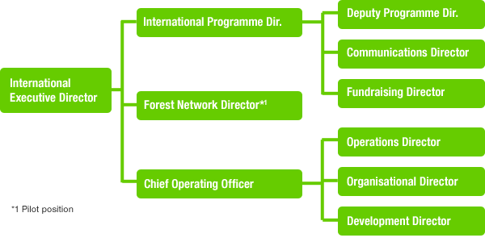

Background - August 6, 2013
The International Executive Director (IED) is responsible for day-to-day management of Greenpeace International, and manages the Senior Management Team.
The Senior Management Team comprises Directors who are each in charge of certain areas of the daily operations.
The Programme Director and Deputy Programme Director are in charge of the campaign areas: C&E (Climate & Energy), Oceans, Forests, SAGE (Sustainable Agriculture, Genetic Engineering) & Toxics; and the Actions, Science, Political & Business and Legal units.
The Fundraising Director is in charge of fundraising.
The Communications Director is in charge of campaign communications, mobilisation & digital networking, communications output and media & images.
The Communications, Fundraising and Deputy Programme Director report to the Programme Director and IED.
The Global Development Director is in charge of organisation development of national & regional organisations and global HR and training.
The Organisation Support Director is in charge of IT, Finance, HR and Facilities & Procurement.
The Operations Director is in charge of management of the Greenpeace ships and Research.
The Global Development, Organisation Support and Operations Directors report to the Chief Operating Officer and IED.
